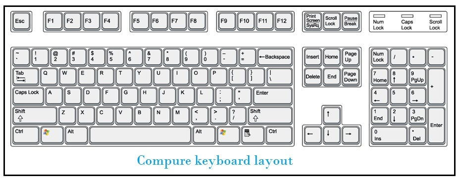

Part 1: What is Touch Typing?
Definition: Touch Typing is the ability to type on a keyboard without using your sense of sight to find the keys. Instead, you use "muscle memory" to know exactly where every key is located instantly.
Measuring Success: WPM and Accuracy
Your typing skill is measured in two ways:
- WPM (Words Per Minute): How many words you can type in 60 seconds. A good goal for beginners is 30 WPM. Professionals often type over 60 WPM.
- Accuracy: The percentage of correct keystrokes. Always aim for 95% accuracy or higher. If you type 100 words a minute but half are misspelled, your speed means nothing.
The Golden Rules for Beginners
- Rule #1: Never look at the keyboard! If you look down, your brain will rely on your eyes instead of memorizing the key locations.
- Accuracy over Speed: In the beginning, type slowly and correctly. Forcing speed early creates bad habits that are hard to break.
- Rhythm: Try to type with an even, steady beat. Don't rush easy words and freeze on hard words.
Proper Posture (Stool Seating)
Because you are practicing on stools without back support, maintaining proper core posture is absolutely critical to avoid neck and lower back pain:
- Core straight: Sit up completely straight. Balance your weight evenly on the center of the stool. Do not hunch your shoulders.
- Feet flat: Plant both feet firmly flat on the floor to stabilize your body.
- Arms: Keep your elbows resting loosely close to your sides, bent at a 90-degree angle.
- Wrists: Keep your wrists completely straight and floating just above the keyboard. Do not rest your wrists on the desk while typing. This restricts finger movement.
- Take Breaks: Without a backrest, your core muscles work harder. Stand up and stretch for 2 minutes every hour.
Part 2: Understanding the Keyboard
A standard desktop computer keyboard has exactly 104 keys. Before we place our fingers, we must understand how the board is organized into specific zones.

The Invisible Line (Left Hand vs. Right Hand)
In touch typing, the main typing area is strictly divided into two halves. Imagine an invisible vertical line running down the middle of the keyboard. It passes directly between the T and Y keys, the G and H keys, and the B and N keys.
- Your Left Hand is strictly dedicated to keys on the left side of this invisible line.
- Your Right Hand is strictly dedicated to keys on the right side of this invisible line.
Detailed Categories of Keys
| Key Type |
Keys Included |
Primary Function |
| Alphanumeric Keys |
Letters (A-Z), Numbers (0-9), and common punctuation (?, !, ., @). |
These are the core typing keys used to input written text and data into the computer. |
| Control & Editing Keys |
Spacebar, Enter, Backspace, Delete, Tab |
Used to manipulate the layout of your text, create spaces, start new lines, erase mistakes, or structure paragraphs. |
| Modifier Keys |
Shift, Ctrl (Control), Alt (Alternate), Windows |
These buttons do nothing when pressed alone. They are held down simultaneously with other keys to "modify" their output (like Capitalizing a letter) or to execute a shortcut. |
| Navigation Keys |
Arrow Keys (↑ ↓ ← →), Home, End, Page Up/Down |
Allows you to move the blinking text cursor around the screen or scroll through a document without erasing or editing any text. |
| Function Keys |
Very Top Row (F1 to F12) |
These are special shortcut keys whose jobs change depending on the software you are using (e.g., F5 refreshes a webpage, F1 opens the Help menu). |
| Numeric Keypad (Numpad) |
Calculator layout on the far right (0-9, +, -, *, /) |
Designed for extremely fast, one-handed number entry. Used heavily in data entry, accounting, and Tally. |
The Most Important Special Keys Explained
Every student must master these highly utilized keys:
- Tab (Tabulator Key): Located on the left side. Instead of pressing the spacebar five times to indent a paragraph, press Tab once. Crucial for internet forms: Pressing Tab allows you to instantly jump from one input box to the next (like moving from "First Name" to "Last Name").
- Ctrl (Control Key): Found on the bottom left and right. Pressing this key by itself does nothing. It is used in combination with other keys to perform shortcuts (like holding Ctrl and pressing 'C' to copy text).
- Windows Key: Located between Ctrl and Alt. Pressing this instantly opens the computer's Start Menu. It is also used for computer shortcuts (like Windows + D to hide all open windows and show the desktop).
- Esc (Escape Key): Located at the very top-left corner. This is your "Cancel" button. If a pop-up window appears, or a program loads in full-screen mode, pressing Esc will usually close it or exit out.
- PrtScn (Print Screen): Located near the top-right. Pressing this instantly takes a digital "photograph" (screenshot) of whatever is currently visible on your monitor. You can then use Ctrl+V to paste that picture into Paint or MS Word.
Part 3: The Home Row (Your Base Camp)
What is the Home Row? It is the middle horizontal row of letters on the keyboard (A, S, D, F, G, H, J, K, L, ;). In touch typing, this is your "Base Camp." Your fingers must ALWAYS rest on these specific keys before you start typing, and automatically return here after pressing any other key.
How to Place Your Fingers
Curve your fingers slightly (as if holding a small ball) and place them gently on the keyboard following this exact pattern:
Left Hand Placement:
- Pinky Finger rests on A
- Ring Finger rests on S
- Middle Finger rests on D
- Index Finger rests on F
Right Hand Placement:
- Index Finger rests on J
- Middle Finger rests on K
- Ring Finger rests on L
- Pinky Finger rests on ; (Semicolon)
Thumbs:
Both thumbs should rest lightly on the Spacebar. Use whichever thumb feels most comfortable to press it. Never use your index finger to press the spacebar.
The Guide Keys (F and J)
If you aren't looking, how do you know your hands are in the right place? Run your index fingers over the F and J keys. You will feel a tiny physical bump or raised line on the plastic. These are the Guide Keys. Whenever you feel lost, slide your index fingers until you feel those bumps to reset your position.
Part 4: Reaching the Top and Bottom Rows
When typing, your fingers stretch up or curl down to hit other letters, but they must "snap" right back to the Home Row immediately after. Keep your hands relatively still; only the necessary finger should stretch.
The Top Row
- Left Pinky: Reaches up to Q
- Left Ring: Reaches up to W
- Left Middle: Reaches up to E
- Left Index: Reaches up to R and stretches slightly right to hit T.
- Right Index: Reaches up to U and stretches slightly left to hit Y.
- Right Middle: Reaches up to I
- Right Ring: Reaches up to O
- Right Pinky: Reaches up to P
The Bottom Row
Curling fingers down is often the hardest part for beginners. Practice slowly.
- Left Pinky: Curls down to Z
- Left Ring: Curls down to X
- Left Middle: Curls down to C
- Left Index: Curls down to hit V and B.
- Right Index: Curls down to hit N and M.
- Right Middle: Curls down to , (Comma)
- Right Ring: Curls down to . (Period)
- Right Pinky: Curls down to / (Slash)
Part 5: Capital Letters, Symbols & Numpad
Typing CAPITAL Letters
There are two different ways to make capital letters. Knowing when to use which is vital for speed.
1. The Caps Lock Key (For ALL CAPS)
If you press the Caps Lock key once, an indicator light will turn on. Now, every letter you type will be CAPITALIZED. Press the key again to turn it off. Do not use Caps Lock to capitalize just the first letter of a sentence or name.
2. The Shift Key (For Single Capitals)
To capitalize just a single letter, use the Shift key.
The Golden Rule of Shift: To use the Shift key, you must hold it down using the pinky finger of the hand opposite to the letter you are typing. If you need a right-hand letter, hold the left Shift key.
| Desired Output |
Keystroke |
Hand Coordination |
| Capital K |
Shift + K |
Left Pinky holds (Shift) + Right Middle presses (K) |
| Capital S |
Shift + S |
Right Pinky holds (Shift) + Left Ring presses (S) |
The Number Row & Symbols
Above the letters is the Number Row. To type the symbol on top of the number (like @, #, $), use the Shift rule.
- Left Hand: Pinky 1, Ring 2, Middle 3, Index 4 & 5.
- Right Hand: Index 6 & 7, Middle 8, Ring 9, Pinky 0.
The Numeric Keypad (Numpad)
On standard desktop keyboards, the right side has a calculator-like Numpad. This is used for heavy data entry (accounting, tally, math).
- Num Lock: You must press the Num Lock key to turn the Numpad on. If it is off, the keys will act as arrows instead.
- Numpad Home Row: Your right hand rests on 4 (Index), 5 (Middle), and 6 (Ring). The 5 key usually has a small bump, just like F and J!
Part 6: Comprehensive Keyboard Shortcuts
Professional typists and computer operators rarely use a mouse. Reaching for a mouse constantly breaks your typing flow and wastes time. Learn these essential shortcuts to control the computer efficiently.
1. Text Editing & File Management
| Shortcut |
Action Performed |
| Ctrl + A |
Select All: Highlights all the text in your document instantly. |
| Ctrl + C |
Copy: Copies highlighted text so you can duplicate it. |
| Ctrl + X |
Cut: Removes highlighted text, but saves it in memory to move elsewhere. |
| Ctrl + V |
Paste: Places the text you just Copied or Cut. |
| Ctrl + Z |
Undo: Erases the last mistake you just made. |
| Ctrl + Y |
Redo: Re-applies an action you just Undid. |
| Ctrl + S |
Save: Saves your current document or file. |
| Ctrl + P |
Print: Opens the print menu. |
| Ctrl + F |
Find: Opens a search bar to find specific words in a document. |
2. Advanced Text Navigation (No Mouse)
| Shortcut |
Action Performed |
| Ctrl + Arrow Keys |
Jump Words: Moves the cursor one full word at a time instead of one letter. |
| Shift + Arrow Keys |
Highlight: Highlights text letter-by-letter using the keyboard. |
| Ctrl + Shift + Arrows |
Highlight Words: Highlights entire words at a time. |
| Home / End |
Moves the cursor to the exact beginning or end of the line you are typing on. |
| Ctrl + Backspace |
Delete Word: Erases an entire word instantly instead of just one letter. |
3. Windows OS & General Navigation
| Shortcut |
Action Performed |
| Alt + Tab |
Switch Apps: Hold Alt and tap Tab to quickly switch between open windows or programs. |
| Windows Key + D |
Show Desktop: Minimizes all open windows to show the Desktop instantly. |
| Windows Key + E |
File Explorer: Opens "My Computer" or File Explorer. |
| Windows Key + L |
Lock PC: Instantly locks your computer screen (great for security). |
| Alt + F4 |
Close Program: Closes the active window or program entirely. |
4. Internet Browsing (Chrome/Edge)
| Shortcut |
Action Performed |
| Tab |
Jump Fields: Extremely useful. Press Tab to instantly jump to the next input box when filling out online forms. |
| Ctrl + T |
Opens a new blank tab in your web browser. |
| Ctrl + W |
Closes the current tab you are looking at. |
| Ctrl + Shift + T |
Rescue Tab: Reopens the last tab you accidentally closed. |
| Ctrl + J |
Opens your Downloads history. |
| Ctrl + H |
Opens your Browsing History. |
| F5 |
Refresh: Reloads the current webpage. |